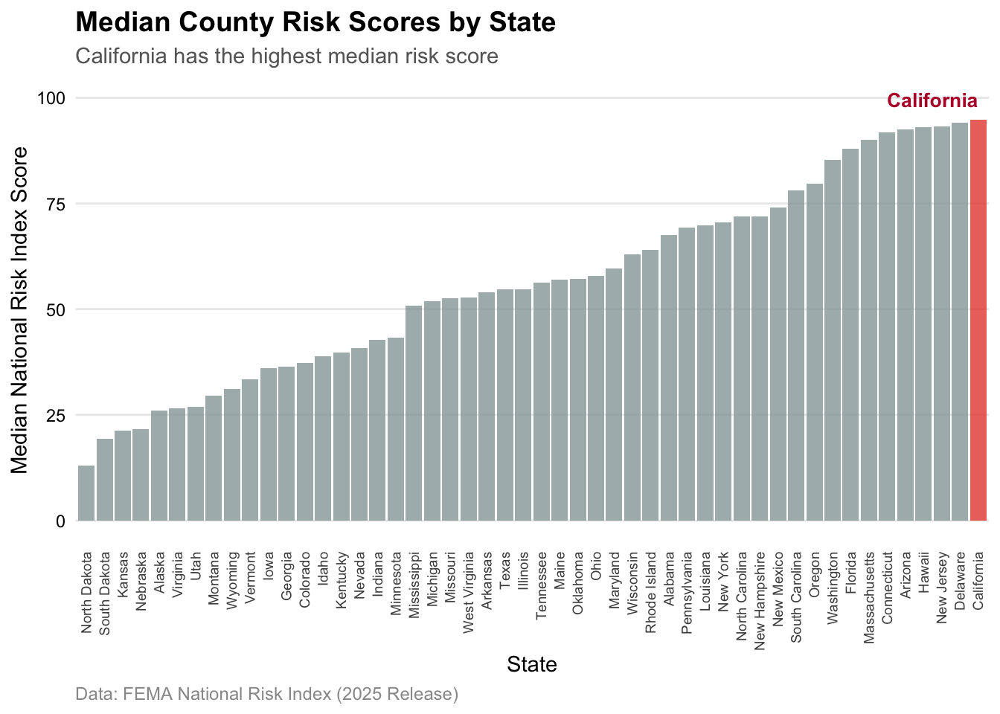
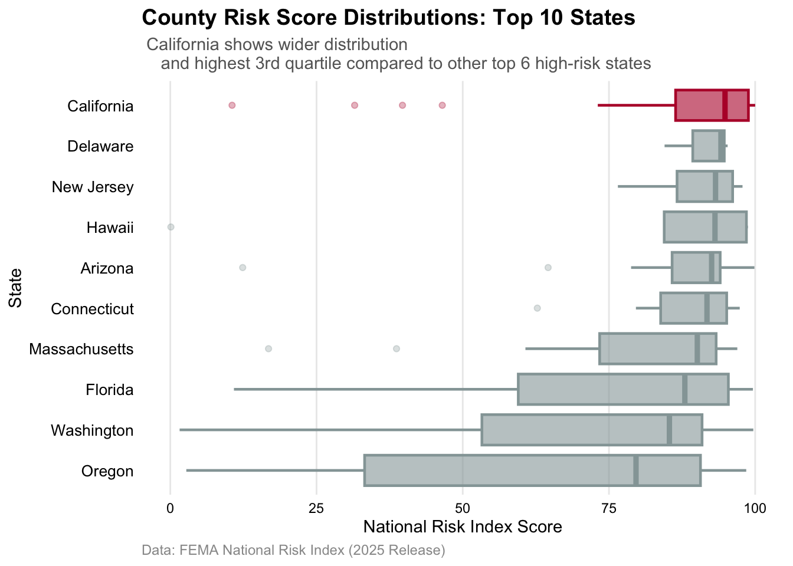
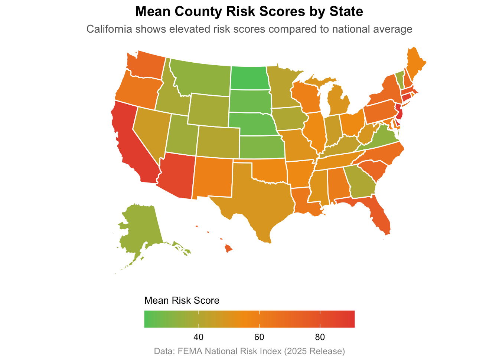

library(tidyverse)
# Read data and clean names
fema_raw <- read.csv("data/National_Risk_Index_Counties_807384124455672111.csv") |> janitor::clean_names()
# Read Data Dictionary
# Using readr for column name fix
NRI_dictionary <- readr::read_csv("data/NRIDataDictionary.csv")Visualizing FEMA NRI Data
EDS 240 HW #2
Purpose
This homework uses the FEMA National Risk Index (NRI) to answer the question How do FEMA National Risk Index scores for counties in California compare to those in other states? using a ggplot2 visualization.
Setup
Data Wrangling
# Select desired columns, filter to 50 states, and add comparison variables
fema_risk_index <- fema_raw |>
select(
state_name,
state_name_abbreviation,
national_risk_index_score_composite
) |>
filter(
!state_name_abbreviation %in% c("AS", "GU", "MP", "PR", "VI", "DC"), # Remove territories
!is.na(national_risk_index_score_composite)
) |>
mutate(
is_ca = state_name == "California")
# Calculate state summaries (mean and median)
state_summaries <- fema_risk_index |>
group_by(state_name, state_name_abbreviation) |>
summarise(
mean_score = mean(national_risk_index_score_composite),
median_score = median(national_risk_index_score_composite),
is_ca = first(is_ca), # Preserve is_ca
.groups = "drop"
)
# State medians with factors (for bar charts)
state_medians <- state_summaries |>
arrange(median_score) |>
mutate(state_name = factor(state_name, levels = state_name))
# State means for map
state_map_data <- state_summaries |>
select(state = state_name_abbreviation, mean_score)
# Top 10 states data (for boxplot)
top_10_states <- state_summaries |>
arrange(desc(median_score)) |>
slice_head(n = 10) |>
pull(state_name)
fema_risk_index_top10 <- fema_risk_index |>
filter(state_name %in% top_10_states) |>
mutate(state_name = factor(state_name, levels = rev(top_10_states)))
# Verify 50 states and removal of NA values.
print(length(unique(fema_risk_index$state_name_abbreviation)))[1] 50print(sum(is.na(fema_risk_index$state_name_abbreviation)))[1] 0Visualization 1: State-Level Summary with California Highlighted
viz1 <- state_medians |>
ggplot(aes(x = state_name, y = median_score, fill = is_ca)) +
geom_col(alpha = 0.8) +
scale_fill_manual(values = c("TRUE" = "#e74c3c", "FALSE" = "#95a5a6")) +
labs(
title = "Median County Risk Scores by State",
subtitle = "California has the highest median risk score",
x = "State",
y = "Median National Risk Index Score",
caption = "Data: FEMA National Risk Index (2025 Release)"
) +
theme_minimal(base_size = 11) +
theme(
legend.position = "none",
plot.title = element_text(face = "bold", size = 14),
plot.subtitle = element_text(color = "gray40", size = 11),
plot.caption = element_text(color = "gray60", size = 9, hjust = 0),
axis.text.x = element_text(angle = 90, hjust = 1, vjust = 0.5, size = 7),
axis.text.y = element_text(color = "black"),
panel.grid.major.x = element_blank(),
panel.grid.minor = element_blank()
) +
annotate("text", x = "California", y = max(state_medians$median_score) * 1.05,
label = "California", color = "#B71234", fontface = "bold", size = 3.5, hjust = 1)
print(viz1)
Visualization 2: Boxplots for Top 10 States
viz2 <- fema_risk_index_top10 |>
ggplot(aes(x = national_risk_index_score_composite, y = state_name,
fill = is_ca, color = is_ca)) +
geom_boxplot(alpha = 0.6, outlier.alpha = 0.3, linewidth = 0.8) +
scale_fill_manual(values = c("TRUE" = "#B71234", "FALSE" = "#95a5a6")) +
scale_color_manual(values = c("TRUE" = "#B71234", "FALSE" = "#95a5a6")) +
labs(
title = "County Risk Score Distributions: Top 10 States",
subtitle = " California shows wider distribution
and highest 3rd quartile compared to other top 6 high-risk states",
x = "National Risk Index Score",
y = "State",
caption = "Data: FEMA National Risk Index (2025 Release)"
) +
theme_minimal(base_size = 11) +
theme(
legend.position = "none",
plot.title = element_text(face = "bold", size = 14),
plot.subtitle = element_text(color = "gray40", size = 11),
plot.caption = element_text(color = "gray60", size = 9, hjust = 0),
axis.text = element_text(color = "black"),
axis.text.y = element_text(size = 10),
panel.grid.major.y = element_blank(),
panel.grid.minor = element_blank()
)
print(viz2)
library(usmap) # For pretty map of US.
viz3 <- plot_usmap(
data = state_map_data,
values = "mean_score",
color = "white",
linewidth = 0.5
) +
scale_fill_gradient2(
low = "#2ecc71",
mid = "#f39c12",
high = "#e74c3c",
midpoint = median(state_map_data$mean_score, na.rm = TRUE),
name = "Mean Risk Score",
guide = guide_colorbar(title.position = "top")
) +
labs(
title = "Mean County Risk Scores by State",
subtitle = "California shows elevated risk scores compared to national average",
caption = "Data: FEMA National Risk Index (2025 Release)"
) +
theme_void(base_size = 12) +
theme(
plot.title = element_text(face = "bold", size = 14, hjust = 0.5),
plot.subtitle = element_text(color = "gray40", size = 11, hjust = 0.5),
plot.caption = element_text(color = "gray60", size = 9, hjust = 0.5),
legend.position = "bottom",
legend.key.width = unit(1.5, "cm"),
legend.title = element_text(size = 10),
legend.text = element_text(size = 9)
)
print(viz3)
Discussion
1. What are your variables of interest and what kinds of data (e.g. numeric, categorical, ordered, etc.) are they (a bullet point list is fine)?
- state_name: categorical (nominal)
- national_risk_index_score_composite: numeric (continuous, 0–100)
- mean_score & median_score: (continuous, 0-100)
- wrangled to ordered by highest scores for plotting
2. How did you decide which type of graphic form was best suited for answering the question? What alternative graphic forms could you have used instead? Why did you settle on this particular graphic form?
I chose a bar chart, box plot and a map as extra recognizing this was not the goal because I thought it could still be interesting and wanted to practice making heat maps. Median showed California as the highest, whereas mean put it 3rd. I considered a scatter plot with mean lines to represent each county, but considering the question asked about California state, I decided it was okay to use averages and reduce the amount of data needing to be looked at on the visualizations. I also could have used a violin plot but box plot better visualizes distribution and outliers resulting in a nicer looking visual.
3. Summarize your main finding in no more than two sentences.
California counties have higher median and 3 NRI scores than all other states, 3rd highest mean NRI scores and highest 3rd and 4th quartile.
4. What modifications did you make to this visualization to make it more easily readable?
I highlighted California using the state flag red and left other states gray, ordered states by average score and polished the theme but left it relativly minimal to focus on the data. I also added a California annotation on the bar chart to reduce eye movement and added figure captions.
5. Is there anything you wanted to implement, but didn’t know how? If so, please describe.
I thought it would be cool to add interactive animations when hovering the mouse over a particular state that could show some statistical information. I always like interacting with data put out by for example NYTimes that allows the user to check specific information for a unique interest i.e their particular state. I hope we learn how to make interactive visualizations.